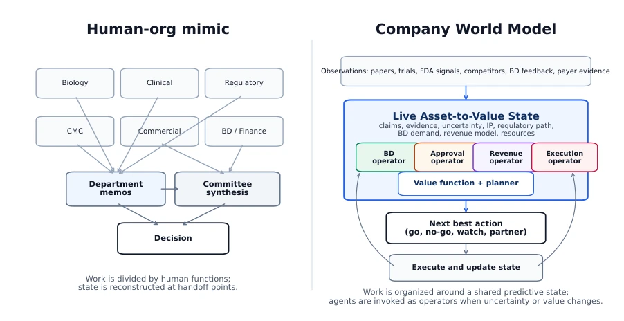
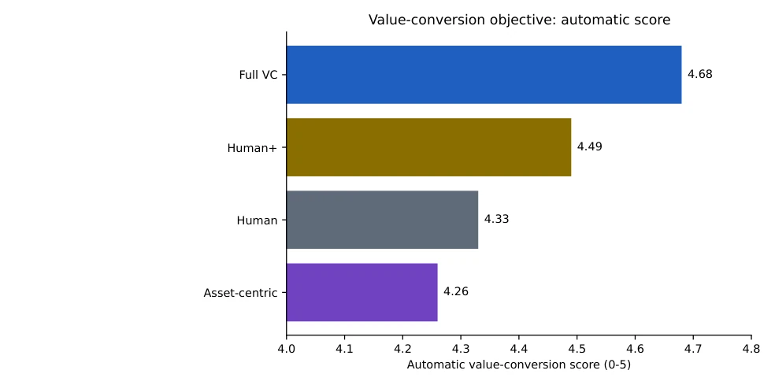
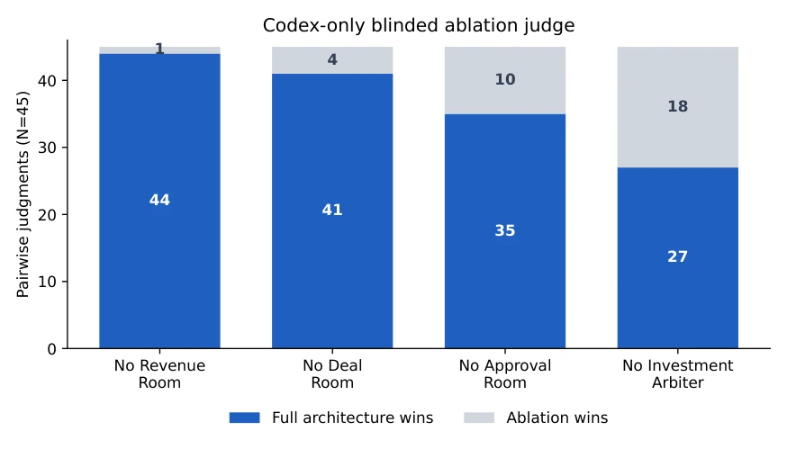

This paper attempts to replace the departmental architecture of traditional biopharmaceutical companies with a 'Company World Model'. It sounds appealing, but essentially it is just applying a more complex Prompt template to a large model. The authors conducted simulated experiments using 45 historical cases, proving that organizing AI agents by 'value conversion' performs better than by 'departments' on BD and approval metrics. However, once commercial objectives are removed and replaced with neutral quality assessment, the advantage becomes insignificant. This is more like a thought experiment in organizational design, rather than a true drug discovery breakthrough. Forcefully applying the 'world model' concept to business decisions, while logically self-consistent, lacks embodied feedback from the physical world, easily falling into a cycle of 'self-fulfilling prophecy'. And based solely on Codex CLI simulation, without verifying real drug discovery capabilities, conclusions should be viewed with caution.
研究动机Motivation
生物制药本质是不确定性下的序列决策问题。现有 AI 代理系统常直接复制人类组织图，将功能分配给不同 Agent [5]。但这忽略了 AI 的核心优势：共享状态、长上下文和动态工具调用。世界模型研究指出，智能体应维护状态预测并更新模型 [1, 2, 3, 4]。本文指出，直接照搬人类部门结构可能不是 AI 原生公司的最优解，需要定义一个资产到价值的状态转换模型，而非静态的职能分工。现有工作多关注科学发现本身，缺乏对组织计算原语的系统性评估，导致 AI 原生公司设计缺乏理论支撑。
Biopharmaceuticals are essentially sequential decision-making problems under uncertainty. Existing AI agent systems often directly copy human organization charts, assigning functions to different Agents [5]. But this ignores the core advantages of AI: shared state, long context, and dynamic tool calling. World model research indicates that agents should maintain state predictions and update models [1, 2, 3, 4]. This paper points out that directly copying human department structures may not be the optimal solution for AI-native companies; it is necessary to define an asset-to-value state transition model, rather than static functional division. Existing work mostly focuses on scientific discovery itself, lacking systematic evaluation of organizational computational primitives, leading to AI-native company design lacking theoretical support.
方法Method
整体流程构建了一个 45 例的回顾性决策基准，涵盖 BD、失败、监管和成功场景。数据流包含公开信息、时间截断和隐藏结果，确保公平性。核心是四种架构对比：人类部门模仿、增强版人类模仿、AI 原生资产中心、AI 原生价值转化（公司世界模型）。价值转化架构包含 Live Asset Value Record 作为状态，Deal/Approval/Revenue Rooms 作为转换算子，Investment Arbiter 作为规划器。评估层包括自动打分、特定目标盲测、中性质量盲测及机制消融。关键创新在于将“房间”定义为状态转换算子而非部门，强调目标函数暴露。系统通过 Codex CLI 执行，强制 Agent 遵循状态 - 转换 - 价值 - 规划结构，而非自由发挥。
The overall process constructed a 45-case retrospective decision benchmark, covering BD, failure, regulatory, and success scenarios. Data flow includes public information, time truncation, and hidden results, ensuring fairness. The core is a comparison of four architectures: Human Department Imitation, Enhanced Human Imitation, AI-Native Asset Center, AI-Native Value Conversion (Company World Model). The Value Conversion architecture includes Live Asset Value Record as state, Deal/Approval/Revenue Rooms as transition operators, and Investment Arbiter as planner. The evaluation layer includes auto scoring, specific goal blind test, neutral quality blind test, and mechanism ablation. The key innovation lies in defining 'Rooms' as state transition operators rather than departments, emphasizing objective function exposure. The system executes via Codex CLI, forcing Agents to follow State-Transition-Value-Planning structure, rather than acting freely.

Figure 1: The benchmark compares a human-org-mimic architecture, in which functional agents produce department-like memos before committee synthesis, with a Company World Model ar- chitecture, in which agents operate on one shared asset-to-value state, simulate objective-specific transitions, and choose the next action through a planning layer.
The benchmark contains 45 cases, covering BD, failure, regulatory, and success scenarios. Auto scoring shows the Value Conversion architecture scores highest on BD/approval/revenue metrics (4.68 vs 4.33). In blind tests, under specific goals, this architecture is significantly better than baseline, but under neutral assessment the advantage weakens or is even surpassed. Ablation experiments show that removing Deal Room or Revenue Room will significantly lower specific metrics, proving the necessity of transition operators. The conclusion is that the architecture is sensitive to the objective function, not absolutely superior to human organization.

Figure 2: Automatic value-conversion score after adding the stronger human-org-mimic-plus base- line. The score is a proxy for BD, approval, and revenue-conversion discipline; blinded judging is the primary preference result when available.

Figure 3: Codex-only blinded value-conversion judge preferences for the full architecture versus single-component ablations.